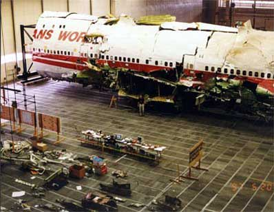

|
 The KGB still exercises rigid control over the Japanese contingent when, for example, they allow them to shoot down an aircraft. Nothing ever happens without two other components also being present:(1) a very stringent deception plan, and (2) a follow-on stimulus to "ping" the U.S. government's classified agencies (Intel, R&D, etc.) to see if they understand what happened. In the TWA-800 case, the deception plan was to MAKE it look like a missile firing, and to actually use some classified maneuvers going on not far away as a convenient scapegoat. So they did use little balls of light streaking through the sky toward that aircraft and striking it! It's called an "electromagnetic missile," and our fellows also know how to do something very similar with ordinary transverse wave EM (check the literature for references from Ziolkowski and others under that name and related terms). So that too can be and was part of the deception. Slyly suggest that one of those type weapons got "carried away" from a U.S. ship or some such. In fact, the Yakuza used several such streaks (EM missiles caused by longitudinal EM wave interferometry) on that aircraft, AND they also used a final "burst" without streaking, directly in the forward cabin, which did indeed blow the fumes in the gas tank with massive sparking -- and also gave some other really decisive signatures which cannot be quoted upon. We published a photo of the actual strike of an LWI EM missile in latter Nov. 1985, offset from a night shuttle launch at Cape Canaveral. They (the Russians at that time, not the Japanese) were just using shuttle launches for practice, in simulation of an ICBM launch, for crew training. The photo was of the ball of light above it, slewing away from it, which explained its use for the shooting (standard old Field Artillery technique of high burst registration and shift from a known registration point).The same weapon was used about two weeks later in two modes, to destroy the doomed Arrow DC-8 at Gander, Newfoundland. One mode was to cool the exhaust gases in the combustion chambers of the jet engines and reduce the thrust, and the other mode was an LWI EM missile to strike the aircraft ahead of the right wing, in the right fuselage, burning right through the fuselage (the picture of the hole was published in Aviation Week & Space Technology). There were many, many other signatures on that airplane. In Spring of 1986, a Titan fired from Vandenberg AFB also was killed, seconds after launch. There are other signatures on the Arrow DC-8 kill. I actually did a small bit of work on the problem for Arrow Airlines, but of course the conventional investigators they also hired could only conceive of an ordinary explosive. Nevertheless, I did tell them as best I could what happened to their aircraft, their crewmembers, and the valiant soldiers onboard. The troops on board the tragic Arrow DC-8 did not die from a simple over-iced plane that crashed as a result of carelessness in deicing operations. They died as the result of an act of war against the U.S., carried out by the KGB. That war is still ongoing and undeclared to this very day. So the KGB made its deadline that had been set down 13 years earlier by Brezhnev. To meet the 1985 schedule, something significant had to be killed successfully and clandestinely, no later than Dec. 31, 1985. The KGB made the schedule on December 12, 1985, by killing the Arrow DC-8 after a warm-up against a U.S. night shuttle launch at Cape Canaveral about two weeks earlier. Actually we were fortunate they did not just go ahead and kill that same shuttle in late November 1985. Instead, they killed the Space Shuttle "Challenger" a few months later. Other Acts of War completed the Milestone Apparently the final demonstration of milestone completion called for the destruction of an aircraft, kill of an ICBM, kill of a space shuttle, induction of earthquakes, and demonstration of the new quantum potential weapon still in the advanced laboratory stage. The KGB completed much of the milestone demonstration in 1985. The remainder they completed in 1986. In January 1986 they killed the space shuttle Challenger. In April 1986 they killed a Titan missile fired from Vandenberg Air Force Base. They induced several large earthquakes and began the induction of the "giant California quake" in the San Andreas fault zone. This latter attempt was countered by a civilian group. In April 1986 the KGB also demonstrated the effectiveness of their newly emerging quantum potential weapon against the convenient U.S. air attack on Libya. Kill of the Titan Missile Over Vandenberg Air Force Base In 1986, the KGB began gingerly using those energetics interferometry weapons to kill other U.S. aircraft and several U.S. missiles, including killing a Titan 34-D fired from Vandenberg AFB on 18 April 1986. The Titan was killed 9 seconds after launch, partially crippling the U.S. space surveillance program. That kill was part of the demonstration of readiness milestone completion. There was a completely decisive signature on the kill of the Titan. Simply check the appropriate issue of Aviation Week & Space Technology, on p.18, where a picture (the one taken from longer range) of the Titan explosion is printed. Look about an inch above that explosion, which is already well developed. There above the Titan explosion sits the KGB ball of light registration point, just as it was sitting over the night shuttle launch in Cape Canaveral in latter Nov. 1985. I persuaded NBC engineer Ron Cole and his colleagues to analyze a copy of that video tape frame by frame. In 17 frames, that little ball of energy above the explosion moved off on its own course, independent of the Titan explosion. Since the launch area for such missile launches is controlled and there were no aircraft over the explosion, then one again has a very clear signature. The KGB killed it, with 100% certainty. That of course was a test of the interferometry weapons in the role of Launch Phase ABM system. Tested against the Arrow, the KGB operators were emulating test of the system in a Launch Phase Antibomber role. These were vital strategic weapon tests. I have published details of the use of the weapons in many other roles.Anyway, that gives you a sort of "thumbnail" sketch of things. The TWA-800 was definitely an LWI kill. But a great deal of effort also went into making it visually LOOK LIKE a regular missile firing.The NTSB tests for explosive residues would have determined an HE warhead explosion. However, it showed there was none. That only leaves the possibility of the conventional EM missile and high energy laser. One can immediately rule out the high energy laser, since it moves at the speed of light and is an intense beam or burst with instantaneous appearing flash beamlike in space. One can also rule out the conventional electromagnetic missile strike, because there were at least three strikes on the ill-fated aircraft, one of which could not in any manner have been an ordinary EM missile. The only candidate that fits ALL the observed phenomena and tests, is the LWI EM missile for two of the strikes and deception, and a final coup de grace by the burst inside the aircraft (without streaks etc.) that exploded the aircraft. However, the conventional engineers and military officers, including those retired, know only the ordinary type of weaponry. Since one can rule out ordinary high powered microwave weapons, lasers, etc., that only leaves regular HE-warhead missiles. Since the deception plan deliberately used LWI EM missiles streaking along in space to simulate that exact thing, then perhaps 70% of the phenomena fits it. This will be enough to generate strong and continued support in many quarters that it was an ordinary U.S. government missile gone awry or fired by mistake. And no amount of argument or facts is going to convince those advocates otherwise, because in their realm of knowledge THERE IS ABSOLUTELY NO OTHER CANDIDATE. They are absolutely good people, just mistaken. But then so are our own NTSB and scientists and engineers, and other government folks concerned with the investigation. Slowly it's becoming a moot point anyway, since now some seven or eight nations have developed longitudinal EM wave weapons, and more are developing them all the time. If you really want to see some of the weird characteristics of longitudinal EM waves, there are some papers by Rodrigues and Lu on the Los Alamos National Laboratory website which discuss "undistorted progressive waves" (UPWs). A UPW is an imperfect longitudinal wave, which still has some transverse wave residues. Just download the summary paper by Rodrigues and Lu on that subject, and ponder the startling characteristics of such waves. These days it seems that almost every major weapons laboratory in the developed countries of the world know of undistorted progressive waves and longitudinal EM waves, and many either have developed at least preliminary LW weapons or are working furiously on them. Note: the ATSB Final Report on the TWA 800 crash conspicuously left the conclusive cause of the accident open. |